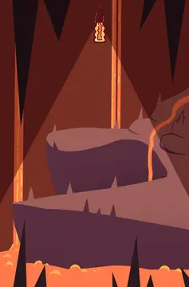
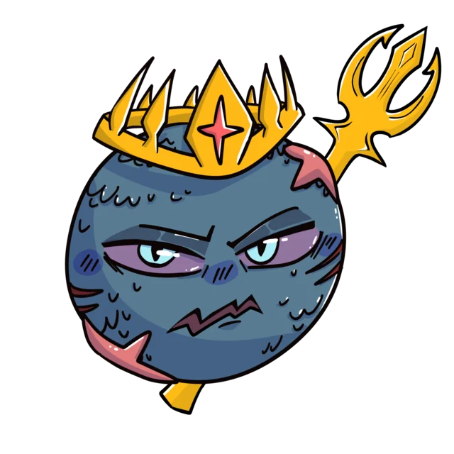
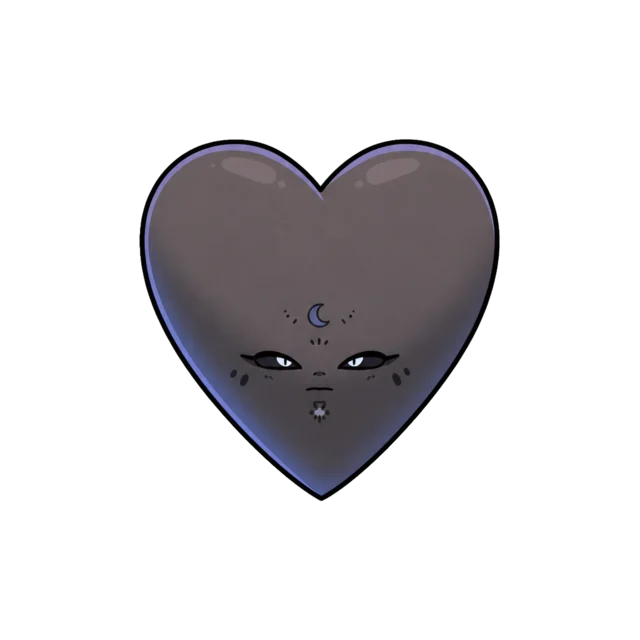

在目前版本中
因果報應的變化比對話更大。
光明、中立與黑暗的業力之路，會改變護盾的表現、預警訊號、敵人的攻擊性和 Boss 的階段，所以故事會改變你的玩法。
版本狀態 全力製作中所有十個對話世界
十個世界的全部對話背景，按照從 Ena 到 Deka 的下降順序排列。





目前製作版 UI
目前版本中的關卡選擇、對話和結算介面。
這是目前流程，依你遇到的先後順序排列：關卡選擇、對話、關鍵節點的選擇，然後是勝利畫面，或單獨的失敗畫面。下面的所有畫面都使用了正式製作中的 Unity 專案的美術資源。
天界路線在十個百級章節中選擇生成的等級。
製作選單映射了 100 個等級章節中的 10 個位置，並直接開啟到選定的運行中。

 201
201對話就發生在地點之中。
角色立繪、地點美術和說話者名牌共用同一個直向畫框。


Shash
那就繼續吧-但不要以為這會很容易。Tria等著您，這將使之前的一切都顯得微不足道。
04 / 里程碑的選擇
答案成為血統的一部分。
在地方層級 90 和 100 中，專門小組要求在對話解決運行問題之前做出「饒恕或殺戮」的決定。

放過
擊殺
05 / 結果選單
勝利則繼續前進，失敗則回到同一關。
目前版本有兩個獨立的結果狀態：PanelWin 提供重播和下一級，而 PanelOver 保留一個明確無誤的重播操作。
勝利·PanelWin
下降通關
 重玩
下一關
重玩
下一關
重玩
下一關
對話角色
下山途中相遇。
所有 25 個具有有效製作開閉肖像對的角色都包含在下面。將滑鼠懸停或聚焦卡片即可切換表情。






遊戲概述
Ball is God?! 是一款在旋轉高塔中不斷下墜的硬派街機遊戲。
核心構想
帶著 Espa 走下一座神聖之塔。一次失誤就可能讓這一局結束，而你做出的重大選擇會改變這個世界的玩法。
當前版本
實現了十個地點場景、程式塔生成、連擊粉碎、滑動盾牌、Boss 配置、分支對話、製作菜單和表情肖像。
目標受眾
喜歡高難度手機街機遊戲、高風險高報酬的時機掌握和 Boss 戰，並且希望有故事可追的玩家。
狀態
積極製作中。近期的工作涵蓋執行階段系統、世界美術、測試，以及遊戲在手機上的實際玩法。
特點
在 Ball is God?! 中你要做什麼
拖曳旋轉下降
水平阻力使塔圍繞自動下落的 Espa 旋轉，排列間隙、危險和安全平台。
硬派街機壓力
只要有一次不設防地中招，這一局就結束了，所以你必須看清高塔，把握好每一步的時機。
Boss 與神話世界
十個地點場景各有各的 Boss，把故事從一個世界帶向下一個世界。
能改變規則的選擇
仁慈、力量和業力改變對話、護盾規則、敵人侵略、電報和 Boss 階段。
玩法循環
Ball is God?! 玩法
- 步驟01看清下降
下墜時留意接下來的平台、縫隙和危險物，尋找安全的時機。
- 步驟02旋轉高塔
水平拖曳使世界圍繞著 Espa 轉動，對齊安全平台或故意的間隙。
- 步驟03風險與粉碎
跳過三個平台進行組合粉碎，然後突破建築物，同時護盾覆蓋一個致命錯誤。
- 步驟04選擇結果
仁慈和力量塑造業力、對話和遊戲規則，並融入敵人和 Boss 身上。
故事/世界
一座神話之塔，你的選擇會一路跟你下墜。
Ball is God?! 始於童年對移動垂直下降街機的迷戀：閱讀間隙、快速反應和本能生存。
這種形式還能承載更多：Boss、個性鮮明的角色、一段故事和道德上的張力。目前的專案讓 Espa 穿過十個地點場景和一群奇特的角色，而選擇會同時改變故事和玩法。
於是目標變成了一款簡單的垂直下降街機遊戲，既有 Boss 戰的壓迫感，又有劇情向 RPG 那樣的選擇後果。
- 願景
- 帶有神話故事的旋轉高塔街機遊戲
- 目前世界範圍
- 十個地點和Boss配置
- 故事階段
- 完整的長篇故事草稿
- 製作狀態
- 全力製作中
一覽
拖曳即可操作，再配上會改變規則的故事。
拖曳旋轉的操作反應迅速。其餘的樂趣，來自神話世界、Boss 和會改變玩法的選擇。
目前版本已經集齊了確定性高塔生成、高風險高報酬的重擊、一擊失敗、Boss、分支對話，以及會改變玩法的業力。
- 類型
- 劇情向垂直下降街機
- 平台目標
- iOS / Android
- 單次遊玩形式
- 考驗技巧的快節奏對局
下載素材
Ball is God?! 媒體與創作者資源
供新聞報導、發行商評審和商店頁面參考使用的 WebP 預覽。全解析度的原始檔案可依需求提供。
品牌與角色
遊戲圖示加上所有25個當前角色，具有完整的製作對話肖像。名稱與 Unity 本地化鍵相符。
Espa玩家角色肖像。
Revla製作對話肖像。
Shash製作對話肖像。
Shush製作對話肖像。
Shish製作對話肖像。
Gigo製作對話肖像。
Goga製作對話肖像。
Giga製作對話肖像。
Askold製作對話肖像。
Miras製作對話肖像。
Hih製作對話肖像。
Heh製作對話肖像。
Hah製作對話肖像。
Musya製作對話肖像。
Dusya製作對話肖像。
Susya製作對話肖像。
Vladus製作對話肖像。
Frisha製作對話肖像。
Luren製作對話肖像。
Kuren製作對話肖像。
Don Yagon製作對話肖像。
Lurya製作對話肖像。
Khleya製作對話肖像。
Varon製作對話肖像。
White製作對話肖像。
選單背景
天體等級選擇系統使用的當前製作藝術品。
 天體選單
天體選單垂直下降世界
完整的十個目前位置背景集，從 Ena 到 Deka 排序。
 01·天空世界Ena 垂直下降背景。
01·天空世界Ena 垂直下降背景。
 02·太空世界Dyo 垂直下降背景。
02·太空世界Dyo 垂直下降背景。
 03·風暴世界Tria 垂直下降背景。
03·風暴世界Tria 垂直下降背景。
 04·雪世界Tessera 垂直下降背景。
04·雪世界Tessera 垂直下降背景。
 05 · 火山世界Pente 背景，遊戲中帶動畫效果。
05 · 火山世界Pente 背景，遊戲中帶動畫效果。
 06 · 海洋世界Eksi 垂直下降背景。
06 · 海洋世界Eksi 垂直下降背景。
 07 · 沙漠世界Epta 垂直下降背景。
07 · 沙漠世界Epta 垂直下降背景。
 08 · 森林世界Ohto 垂直下降背景。
08 · 森林世界Ohto 垂直下降背景。
 09 · 洞穴世界Ennea 垂直下降背景。
09 · 洞穴世界Ennea 垂直下降背景。
 10 · 地獄世界Deka 垂直下降背景。
10 · 地獄世界Deka 垂直下降背景。
故事街機背景
完整的對話地點集合：光之廳以及所有十個世界的背景。
 00 · 光之殿
00 · 光之殿 01 · 天空對話
01 · 天空對話 02 · 空間對話
02 · 空間對話 03 · 風暴對話
03 · 風暴對話 04 · 雪的對話
04 · 雪的對話 06 · 海洋對話
06 · 海洋對話 07 · 沙漠對話
07 · 沙漠對話 08 · 森林對話
08 · 森林對話 09 · 洞穴對話
09 · 洞穴對話 10 · 地獄對話
10 · 地獄對話

Ball is God?! 常見問題解答
關於 Ball is God?! 的常見問題
Ball is God?! 是一款什麼樣的遊戲
一款硬派垂直下降街機遊戲。你要圍繞不斷下墜的 Espa 旋轉高塔，跳過安全落點為重擊充能，一路衝破神話世界。
Ball is God?! 要怎麼玩？
水平拖曳以旋轉塔，跳過三個平台進行粉碎，當冷卻護盾必須吸收致命一擊時垂直滑動。
Ball is God?! 已經發布了嗎？
還沒有。它正在積極製作中，涉及執行階段系統、世界美術、故事內容和測試。目前沒有公開的發布日期。目標平台是 iOS 和 Android。
Ball is God?! 有什麼不同？
它把高風險高報酬的街機壓迫感，與十個地點，以及會改變對話、敵人、攻擊預告、護盾和 Boss 的業力結合在了一起。
Ball is God?! 是誰製作的？
WillowinWorlds 是一家製作手機益智與街機遊戲的獨立工作室。
我可以使用 Ball is God?! 的媒體素材嗎？
可以，用於新聞報導、發行商評審和商店參考。原始檔案除非你向我們索取，否則不會公開。
Ball is God?! 開發日誌
何時更新了什麼
- 世界地面與危險要素驗證
角色表現、確定性生成和尖刺陷阱，經歷了一輪視覺與驗證的綜合打磨。
- 2026 年 7 月製作版 UI 與角色最佳化
關卡選擇、通用的操作控制項、直向對話畫框和成對的角色表情現已就位。
- 2026 年 2 月專案範圍審查
團隊完成了主要故事整合過程，並檢視了專案的整體規模：十個世界、道德選擇、Boss 和多重結局。
- 2025年4月-5月故事重寫與能力
整個故事被重寫，人物能力提升，道德後果變得更清晰。
- 2024 年 8 月故事走向開始
團隊認為 Ball is God?! 不該只是一款簡單的下降街機遊戲，於是加入了神話故事和道德抉擇的構想。
- 2024 年 7 月原創概念
這個專案最初是工作室的第一個遊戲創意：一款在神聖高塔中飛速下墜的垂直街機遊戲。
- 當前版本街機與故事合於一個版本
旋轉高塔下降、連擊重擊、滑動護盾、Boss、對話和業力，如今已在同一個版本中協同運作。